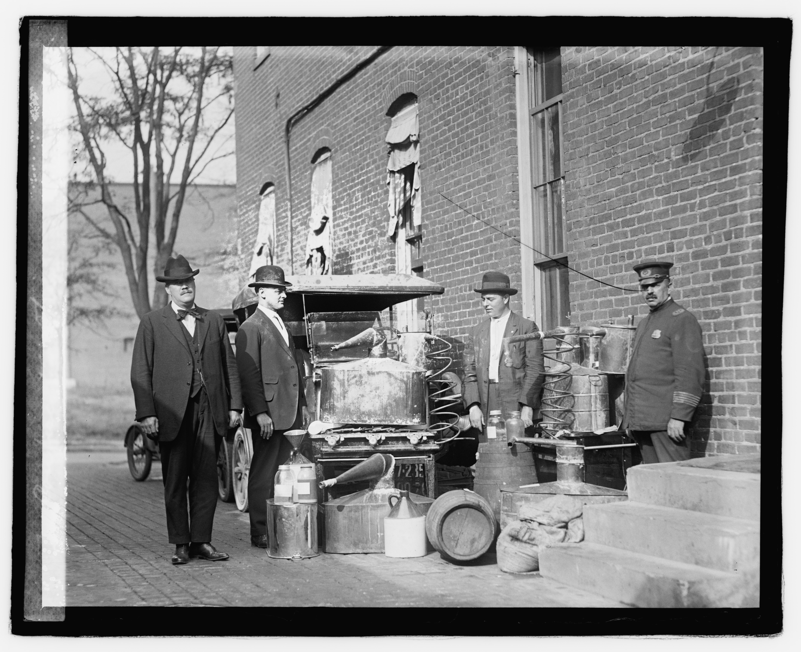
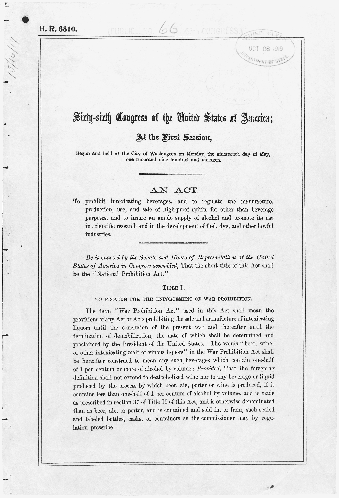
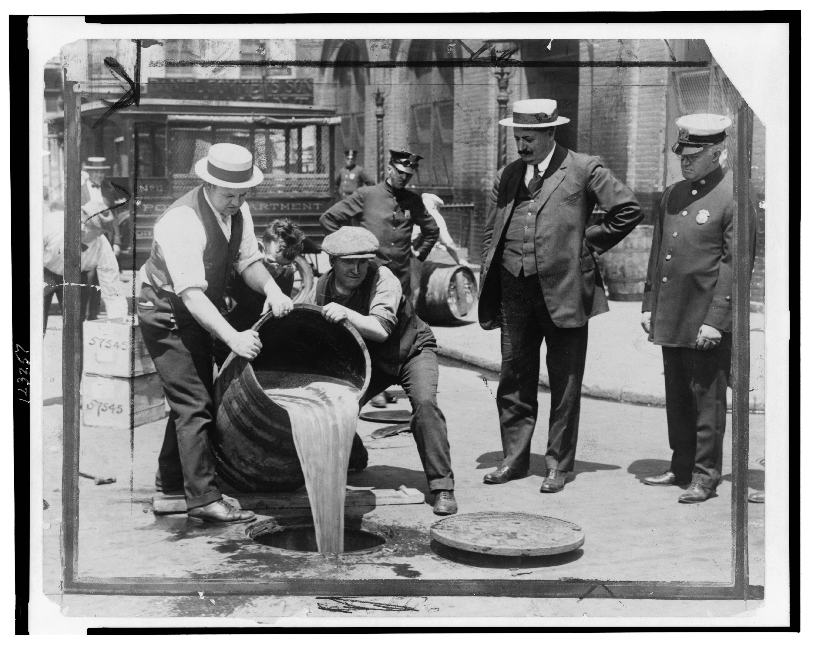
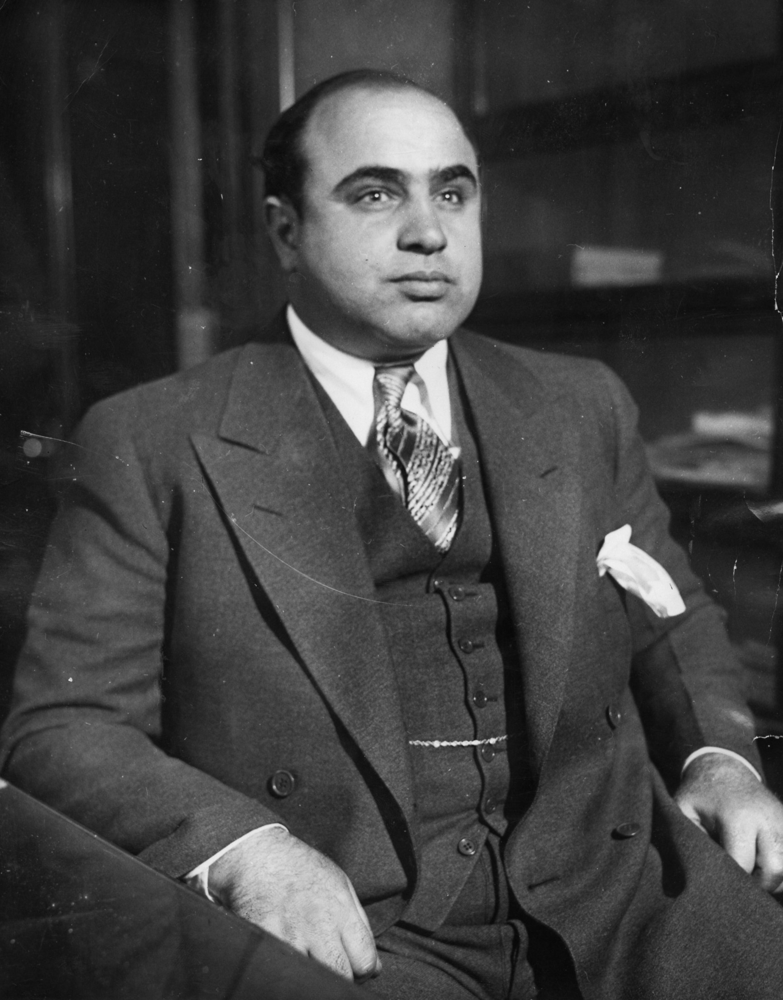

Directions: Work through the five stations in order. Each station gives you one kind of evidence about Prohibition: the law itself, a raid, the business the law created, the dry case for the law, and the repeal case against it. At the end, build the ledger the Wickersham Commission faced in 1931: what the law achieved, what it cost, and what it built. Every ledger entry must name the station it came from.

The photograph above is the physical side of the enforcement problem. A still this size could be hidden in a barn or a basement, moved in a night, and rebuilt for a small sum. The stations that follow ask what it cost the government to find equipment like this, and what grew up in the space the law left open.
Source: Eighteenth Amendment, Section 1 (1919), and National Prohibition Act (Volstead Act), Title II, Section 3 (1919), text as published in the United States Statutes at Large. The definition and exceptions are summarized below the two quoted clauses.

Clause A, the amendment. After one year from the ratification of this article the manufacture, sale, or transportation of intoxicating liquors within, the importation thereof into, or the exportation thereof from the United States and all territory subject to the jurisdiction thereof for beverage purposes is hereby prohibited.
Clause B, the enforcement act. No person shall on or after the date when the eighteenth amendment to the Constitution of the United States goes into effect, manufacture, sell, barter, transport, import, export, deliver, furnish or possess any intoxicating liquor except as authorized in this Act, and all the provisions of this Act shall be liberally construed to the end that the use of intoxicating liquor as a beverage may be prevented.
Summary of the definition and the exceptions. The act defined intoxicating liquor to include any beverage containing one half of 1 percent or more alcohol by volume, which covered beer and wine as well as distilled liquor. It permitted liquor under permit for medicine, sacramental wine for religious services, and alcohol for industrial use, and it allowed families to make fermented cider and fruit juices at home.
Clause B lists nine actions. Write out the list, then explain why a legislature would ban possession and furnishing, and not only manufacture and sale.
The amendment bans a substance it does not define, and the act supplies the definition. What did the 0.5 percent definition add to the amendment, and which drinkers did it bring under the law who were not its stated target?
Source: Photograph of agents disposing of seized liquor in New York City, about 1921, with a summary of speakeasy raid practice compiled from the documented work of federal agents in New York. The summary is labeled; it is not a single raid report.

Summary. A speakeasy raid began with entry, and entry was the hard part. Doors were locked and barred, and lookouts warned the room. Federal agents Izzy Einstein and Moe Smith, the best known agents in New York, relied on disguise: they entered in work clothes, as musicians, as customers of every trade, ordered a drink, and only then identified themselves and made arrests. A raid that succeeded seized the liquor on the premises, arrested the seller, and closed the room. The liquor was later destroyed in public, as in the photograph, so that it could not be sold a second time by anyone, including the officers who had seized it. The room itself often reopened, under a new name and a new door, within weeks.
Why did the agents in the summary need disguises at all? Answer with what the speakeasy door was designed to do.
The photograph shows seized liquor being destroyed in the street. Give two reasons, both supported by the station text, why the government destroyed seized liquor in public instead of storing it.
Source: Photograph of Al Capone, with an organization chart summarized from the lesson reading and from investigators' descriptions of the Capone organization. The chart is a summary prepared for this activity; the Outfit kept no public chart of itself.

The Capone organization, summarized as a chart.
Head of the organization: Al Capone, Chicago. Supply: breweries and stills in and around Chicago, and whiskey smuggled from Canada. Distribution: trucks, garages, and warehouses moving liquor to speakeasies the organization owned or supplied. Other income: gambling rooms, and racketeering payments collected from businesses and unions. Protection: bribes paid to police officers and public officials, and money for lawyers and bail. Internal discipline: threats and violence against rivals, hijackers, and witnesses.
Read the chart as a business. Which two lines of the chart would also appear, word for word in substance, on the chart of a legal brewery company of the same size, and which two lines could appear only on the chart of an illegal one?
The protection line costs the organization money every week. What does that money buy, and why is the purchase necessary in a way it would not be for a legal company?
Source: Billy Sunday, evangelist, preaching at Norfolk, Virginia, as national Prohibition took effect in January 1920, as quoted in Daniel Okrent, Last Call: The Rise and Fall of Prohibition (2010). A summary of the wider dry case follows the quotation.
The reign of tears is over. The slums will soon be only a memory. We will turn our prisons into factories and our jails into storehouses and corncribs. Men will walk upright now, women will smile, and the children will laugh. Hell will be forever for rent.
Summary of the dry case. Sunday spoke for a coalition that had worked for decades: the Woman's Christian Temperance Union, the Anti-Saloon League, and many Protestant churches. Their case rested on the saloon as they had documented it: wages drank up before rent was paid, violence in the home, and political machines run out of saloon back rooms. The drys promised that ending the legal liquor trade would cut crime and poverty together, empty the prisons, and return wages to families. By 1920 their amendment was in the Constitution, the strongest position any American reform movement had ever reached.
Sunday makes three testable predictions in the quotation. List them, in the form of results a reader in 1930 could have checked.
The summary says the dry case rested on the saloon as the drys had documented it. Name two harms in the summary that were real features of the pre-1920 saloon system, and explain why ending the legal trade did not end them.
Source: Women's Organization for National Prohibition Reform, platform adopted at its convention in Cleveland, Ohio, April 23 to 24, 1930, as quoted in David E. Kyvig, Repealing National Prohibition (1979). Cuts in the text are marked with ellipses.
We are convinced that National Prohibition is fundamentally wrong... because its attempt to impose total abstinence by national government fiat ignores the truth that no law will be respected or can be enforced unless supported by the moral sense and common conscience of the communities affected by it.
We are convinced that National Prohibition, wrong in principle, has been equally disastrous in consequences in the hypocrisy, the corruption, the tragic loss of life and the appalling increase of crime which have attended the abortive attempt to enforce it; in the shocking effect it has had upon the youth of the nation...
Note on the source. The organization was founded in 1929 by Pauline Sabin, who had supported Prohibition when it was adopted. Its membership passed 100,000 within about a year, drawn heavily from the same social world that had supplied the dry movement its women leaders a generation earlier.
The platform gives one argument of principle and one argument from consequences. State each in your own words, and name the sentence in the text that carries each one.
Why did it strengthen the repeal case that this platform came from an organization of women led by a former supporter of Prohibition? Answer with what opponents could no longer claim.
Build the ledger in the three columns below. Write two entries in each column. Each entry must be one line of fact and must end with the station number it came from, in parentheses. An entry without a station number earns no credit, because a ledger entry that cannot be traced to its document is an opinion.
What the law achieved (two entries):
What the law cost (two entries):
What the law built (two entries):
Close the ledger. In a short paragraph, answer the question the Wickersham Commission faced: on the evidence of your six entries, should the law have been enforced harder, changed, or repealed? Use at least three of your entries as evidence, and answer the strongest entry on the other side.
Clause B lists nine actions. Write the list, and explain why possession and furnishing were banned. Manufacture, sell, barter, transport, import, export, deliver, furnish, possess. A ban on making and selling alone would leave the trade free to move through gifts, middlemen, and stored stock, and would leave every speakeasy free to hold liquor it claimed not to sell. Possession and furnishing close the gaps between the seller and the glass, which is where an illegal market actually operates.
What did the 0.5 percent definition add, and which drinkers did it bring under the law? The amendment prohibited intoxicating liquors without defining them. The act defined the term at one half of 1 percent alcohol by volume, which classified ordinary beer and light wine as intoxicating. Beer and wine drinkers, including the immigrant and working class drinkers whose beer was a food and a social habit rather than a saloon vice, were brought under a law that had been sold mainly as a weapon against distilled liquor and the saloon.
Why did the agents need disguises? The speakeasy door was a filter. It was locked and barred, watched by lookouts, and opened only for a password, a card, or a known face, and its purpose was to admit customers and exclude officers. A uniformed or recognizable agent could not get inside to witness a sale, which was the evidence an arrest required. Disguise turned the agent into a customer the filter would pass.
Why destroy seized liquor in public? Give two reasons. Destruction ended the liquor as evidence and as merchandise at once: destroyed liquor could not be resold by the seller, stolen from storage, or sold a second time by a corrupt officer, which the station text names directly. Public destruction also demonstrated enforcement to a watching public and press at a time when the bureau's record was doubted. Accept either reason developed from the text, plus the closure of the room and the arrest of the seller as context.
Which chart lines fit a legal company, and which fit only an illegal one? Legal in substance: supply through breweries and stills, and distribution by trucks, garages, and warehouses to retail outlets. A legal brewer of the same size kept the same production and delivery structure, and paid for lawyers as well. Illegal only: protection paid as bribes to police and officials, and internal discipline by threats and violence against rivals and witnesses. A legal company buys protection from the state by paying taxes and obeying inspection, and settles disputes in court.
What does the protection money buy, and why is it necessary? It buys non-enforcement: raids that do not happen, warnings before raids that do, charges that fail, and officials who protect the distributor's territory against competitors and honest officers. A legal company does not need to buy the state's tolerance because the state already permits its product. The illegal firm's entire inventory is contraband, so tolerance is its first operating cost.
Sunday's three testable predictions. The slums would soon be only a memory. Prisons would empty to the point of conversion into factories, and jails into storehouses. Family life would visibly improve: men upright, women smiling, children laughing. A reader in 1930 could check all three against city poverty, prison populations swollen by liquor cases, and the homicide and corruption record of the decade, and each check fails on the terms Sunday stated.
Two real harms of the saloon system, and why ending the legal trade did not end them. Wages consumed in drink before household needs were met, and violence and political corruption organized around saloon premises. Both were documented features of the pre-1920 system. Ending the legal trade moved drinking into speakeasies and homes without ending the drinking, and it removed the license, the closing hour, and the inspector, the legal tools that had limited the saloon's harms, while handing the trade to sellers no regulation reached.
One argument of principle and one from consequences. Principle: a national law that imposes total abstinence cannot be respected or enforced unless the communities under it support it in conscience, stated in the sentence on the moral sense and common conscience of the communities affected. Consequences: enforcement produced hypocrisy, corruption, loss of life, and an increase of crime, stated in the sentence listing those results of the abortive attempt to enforce it. Credit requires the student to tie each argument to its sentence.
Why did the source of the platform strengthen the repeal case? The dry movement's strongest claim had been that women, as defenders of the home, stood behind Prohibition, and that repeal was the cause of brewers, distillers, and saloon interests. An organization of women, founded by a former dry supporter and numbering over 100,000 members within about a year, removed that claim. Opponents could no longer present repeal as men and liquor money against women and the home, because women organized on both sides.
Ledger entries will vary. Full credit should be awarded if the student: